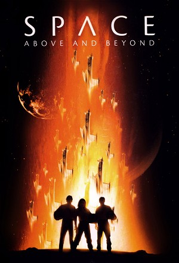

Space: Above and Beyond (1995)
ActionAdventureDramaMysteryScience FictionThriller
| Year | 1995 |
|---|---|
| Rating | TV-PG |
| Status | Completed |
| Seasons | 2 |
| Episodes | 24 |
| Genre | Action, Adventure, Drama, Mystery, Science Fiction, Thriller |
It’s the year 2063. After 50 years of deep space exploration, the people of Earth feel certain they are alone in the universe. Then word comes that two Earth outposts light-years away from home have been brutally attacked by an advanced alien civilization. Now the new young recruits of the United States Marine Corps Space Aviator Cavalry are heading for the front lines of space in the toughest battle the world has even faced. Thrust into an intergalactic war beyond imagination, these untested fighter pilots suddenly find themselves waging a life-and-death struggle to protect Earth and to save mankind from total annihilation.
Episodes
Specials
| # | Title | Air Date | Synopsis |
|---|---|---|---|
| 1 | Beyond and Back | — |
Season 1
In 2063, humanity begins to colonize space. Nathan West and his girlfriend Kylen Celina are about to depart for Tellus, the second outpost after the colony of Vesta. But Nathan loses his place on the spaceship. Hoping to see Kylen again, he joins the Space Cavalry, a marine corps unit. And they are launched on a mission when aliens plan an attack on the colonies.
| # | Title | Air Date | Synopsis |
|---|---|---|---|
| 1 | Pilot (1) / Pilot (2) | 1995-09-24 | In the year 2063, the final frontier is a battle field. An earth united in peace takes its first steps toward interplanetary colonization, only to be threatened by an enigmatic alien race. When an Earth outpost 16 light- |
| 3 | The Farthest Man from Home | 1995-10-01 | When the USS Saratoga passes close to the planet, Vesta Colony, where the Earth colonist were attacked, West goes AWOL and flies down to the planet in hopes that his girlfriend, Kylen, somehow survived. |
| 4 | The Dark Side of the Sun | 1995-10-08 | Nightmares come to life for Shane when a sentry-duty assignment on an asteroid leads the 58th into a bloody confrontation with a battalion of rogue androids, among which are the AI's who murdered her parents. |
| 5 | Mutiny | 1995-10-15 | When mutiny erupts aboard a civilian cargo ship carrying 200 In Vitro embryos, Cooper faces a difficult decision-should he protect his fellow soldiers, or join forces with the rebellious Tanks? |
| 6 | Ray Butts | 1995-10-22 | The Saratoga has a mysterious new passenger: a battle-scarred special-forces commando whose classified mission directives put the 58th at his disposal, even if it means leading them to certain disaster. |
| 7 | Eyes | 1995-11-05 | The Saratoga becomes a pressure cooker of violence and political intrigue when an assassination on Earth forces a delegation of UN officials to use the craft as the site of an important conference. |
| 8 | The Enemy | 1995-11-12 | The soldiers of the 58th become their own worst enemies when a routine supply mission goes awry, leaving them stranded in alien territory and suffering from the effects of a mysterious Chig weapon. |
| 9 | Hostile Visit (1) | 1995-11-19 | A commandeered alien battleship provides the 58th with information about an important Chig outpost, giving the Earth forces an opportunity to make a Trojan-horse attack against the enemy-if the 58th can learn to fly the |
| 10 | Choice or Chance (2) | 1995-11-26 | After narrowly escaping the crippled alien battleship, the 58th finds itself imprisoned in the catacombs of a Chig penal colony. While Wang suffers in an alien torture chamber, Nathan encounters someone he'd only dreamed |
| 11 | Stay with the Dead | 1995-12-03 | A failed rescue mission leaves the 58th presumed dead, except for Nathan, who lands in the hospital, where a nagging memory that his comrades are still alive is passed off as a result of suffering from severe head trauma |
| 12 | The River of Stars | 1995-12-17 | Christmas Eve finds the 58th in dire straits: its transport vehicle, damaged in battle, is hurtling uncontrolled into enemy territory and the pilots must struggle to stay alive with no power, no weapons, and no hope of |
| 13 | Who Monitors the Birds? | 1996-01-07 | Stranded and practically defenseless on an alien world, Hawkes accepts an assassination assignment that's supposed to buy him an immediate Honorable Discharge from the Marines. |
| 14 | Level of Necessity | 1996-01-14 | The 58th enters the tunnels to try to find and destroy a Chig ammo dump. In the tunnels on the way to the ammo dump, Lubin is killed, and Damphousse predicts that one more of them will die. |
| 15 | Never No More | 1996-02-04 | Shane risks her life when she volunteers to fight an enemy spacecraft with another squadron, led by a former boyfriend whose new love was killed during a mission. (Part 1 of 2) |
| 16 | The Angriest Angel | 1996-02-11 | McQueen seeks reinstatement of his pilot status so he can fly what could be a suicide mission: find and destroy a seemingly invincible Chig super-bomber.(Part 2 of 2) |
| 17 | Toy Soldiers | 1996-02-18 | West discovers that his brother has enlisted in the Corps and is serving under a young, gung-ho lieutenant who's so determined to make a name for himself as a soldier, that he will risk endangering the lives of his entir |
| 18 | Dear Earth | 1996-03-03 | In the midst of a mail call, McQueen tells Hawkes to resign himself to being left out of the festivities - InVitros have no families back on Earth. But the mail brings a surprise for the two men. In an effort to bring or |
| 19 | Pearly | 1996-03-24 | Stranded on an embattled planet, the 58th must race to reach the rendezvous point in time to save an injured Shane-and their only hope is a marooned officer, who's been on the planet for months, and has developed a possi |
| 20 | R&R | 1996-04-12 | The 58th visits a pleasure ship called the Bacchus for some overdue R&R; but when a sudden call to action puts them in the heat of battle, Cooper discovers that he's addicted to a pain medication that's particularly dang |
| 21 | Stardust | 1996-04-19 | The 58th is embroiled in a dangerous, top-secret counteroffensive against the Chigs when the Saratoga takes on some mysterious passengers-a high-profile general, a stern colonel and the corpse of a recently executed crim |
| 22 | Sugar Dirt | 1996-04-20 | When Commodore Ross sees there's an opportunity to launch a potentially crippling offensive against the Chigs. Forced to abandon the 58th on a barren planet, Ross leaves the marines to fend for themselves with little am |
| 23 | And if They Lay Us Down to Rest... (1) | 1996-05-26 | The 58th is deployed to a seemingly barren moon to make final preparations for a major offensive by the Earth forces, but when they arrive they discover that the moon is home to an unknown species-and that Operation: Rou |
| 24 | ...Tell Our Moms We Done Our Best (2) | 1996-06-02 | Conclusion. Tensions increases as Earth forces prepare for peace talks with the alien Chigs, and Shane realizes that the enemy has learned details of Operation Roundhammer. |